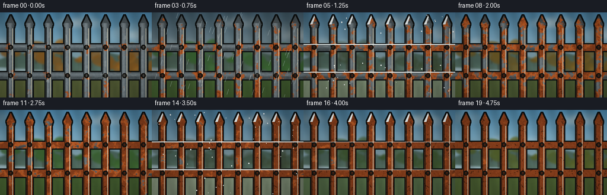
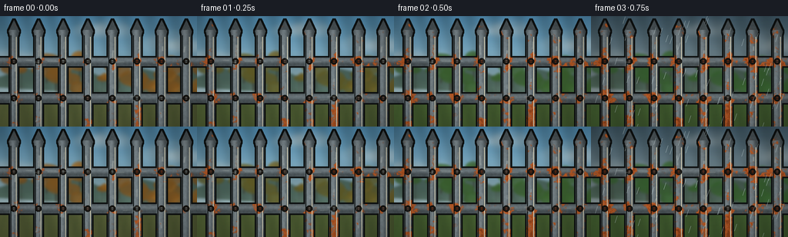

CODING AGENTS AS PIXEL WORLD MODELS
traex/GPT-5.6-Sol · material_0044
点击播放 · 原生 RGB 像素
逐轮保存的候选
回放视频、检查图与代码变化。
每份候选均可单独播放。实际图片检查记录在下方工具轨迹中。
候选 01播放与检查图
点击播放 · 原生 RGB 像素

展开代码变化
--- 上一保存版本
+++ 本次保存版本
@@ -0,0 +1,247 @@
+from pathlib import Path
+import math
+import numpy as np
+from PIL import Image, ImageDraw, ImageFilter
+import artifact_io
+
+# Deterministic, self-contained procedural renderer.
+ROOT = Path(__file__).resolve().parent
+W, H, N = 256, 144, 20
+S = 3
+w, h = W*S, H*S
+rng = np.random.default_rng(4401)
+
+
+def smooth_noise(width, height, cell, seed, blur=0.0):
+ """Bilinearly enlarged random lattice, optionally softened."""
+ rr = np.random.default_rng(seed)
+ gw, gh = width // cell + 3, height // cell + 3
+ small = (rr.random((gh, gw))*255).astype(np.uint8)
+ im = Image.fromarray(small, 'L').resize((width, height), Image.Resampling.BICUBIC)
+ if blur:
+ im = im.filter(ImageFilter.GaussianBlur(blur))
+ return np.asarray(im, dtype=np.float32)/255.0
+
+# Fixed corrosion field: low values corrode first. Multiscale noise makes organic islands.
+n1 = smooth_noise(w, h, 34, 111, 4)
+n2 = smooth_noise(w, h, 12, 222, 2)
+n3 = smooth_noise(w, h, 5, 333, 1)
+field = .50*n1 + .31*n2 + .19*n3
+# Rust nuclei at welds, feet, and a few old paint chips.
+yy, xx = np.mgrid[0:h, 0:w]
+for cx in [18, 50, 82, 114, 146, 178, 210, 242]:
+ for cy, rad, strength in [(59, 15, .34), (105, 16, .30), (137, 24, .23)]:
+ d2 = ((xx-cx*S)/(rad*S))**2 + ((yy-cy*S)/(rad*S))**2
+ field -= strength*np.exp(-2.2*d2)
+for cx, cy, rad in [(31,35,12),(91,85,11),(157,40,14),(221,91,13),(62,121,11),(188,129,14)]:
+ d2 = ((xx-cx*S)/(rad*S))**2 + ((yy-cy*S)/(rad*S))**2
+ field -= .26*np.exp(-2.5*d2)
+field = np.clip(field, 0, 1)
+metal_grain = .55*smooth_noise(w,h,7,444,1) + .45*smooth_noise(w,h,2,555,.4)
+
+# Fence geometry masks and coordinate-aware metallic illumination.
+mask_img = Image.new('L',(w,h),0)
+md = ImageDraw.Draw(mask_img)
+# rear horizontal rectangular rails, slight perspective
+rails = [((0,54),(w,65)), ((0,101),(w,113))]
+for (x0,y0),(x1,y1) in rails:
+ md.polygon([(x0,y0*S),(x1,y0*S),(x1,(y1)*S),(x0,(y1)*S)], fill=255)
+# vertical pickets with pointed spear heads
+centers = [18,50,82,114,146,178,210,242]
+widths = [10,10,10,11,11,11,12,12]
+for cx,bw in zip(centers,widths):
+ x0=(cx-bw/2)*S; x1=(cx+bw/2)*S
+ # shaft
+ md.rectangle([int(x0),22*S,int(x1),h], fill=255)
+ # neck and spear silhouette
+ md.polygon([(int(x0),24*S), ((cx-7)*S,20*S), (cx*S,5*S), ((cx+7)*S,20*S), (int(x1),24*S)], fill=255)
+ md.ellipse([(cx-6)*S,16*S,(cx+6)*S,28*S], fill=255)
+mask = np.asarray(mask_img,dtype=np.float32)/255.
+# expanded silhouette for beveled dark rim
+outline = mask_img.filter(ImageFilter.MaxFilter(13))
+inneredge = mask_img.filter(ImageFilter.MinFilter(7))
+
+# metallic shading: each picket/rail gets a rounded highlight.
+shade = np.full((h,w), .25, np.float32)
+for cx,bw in zip(centers,widths):
+ local=(xx/S-(cx-bw*.16))/(bw*.72)
+ highlight=np.exp(-2.8*local*local)
+ region=(np.abs(xx/S-cx) <= bw/2+1) & (yy>=18*S)
+ shade=np.where(region, .17+.55*highlight, shade)
+for cy in [59,107]:
+ local=(yy/S-(cy-2))/6.0
+ hi=np.exp(-2.1*local*local)
+ region=np.abs(yy/S-cy)<7
+ shade=np.where(region,np.maximum(shade,.14+.45*hi),shade)
+shade = np.clip(shade + (metal_grain-.5)*.16,0,1)
+
+# Persistent scratches; narrow exposed cuts become early-rust seams.
+scratch_img = Image.new('L',(w,h),0)
+sd=ImageDraw.Draw(scratch_img)
+for k in range(28):
+ cx=float(rng.choice(centers))+rng.uniform(-3,3)
+ y0=rng.uniform(27,132); length=rng.uniform(5,18)
+ sd.line([(int(cx*S),int(y0*S)),(int((cx+rng.uniform(-.7,.7))*S),int((y0+length)*S))],fill=int(rng.integers(80,180)),width=int(rng.integers(1,3))*S)
+for k in range(12):
+ x0=rng.uniform(4,248); y0=rng.choice([59,107])+rng.uniform(-3,3)
+ sd.line([(int(x0*S),int(y0*S)),(int((x0+rng.uniform(5,15))*S),int((y0+rng.uniform(-1,1))*S))],fill=130,width=S)
+scratches=np.asarray(scratch_img.filter(ImageFilter.GaussianBlur(.45*S)),np.float32)/255
+field=np.clip(field-.19*scratches,0,1)
+
+# Fixed background forms for temporal coherence.
+tree_specs=[]
+for k in range(27):
+ tx=rng.uniform(-10,266); ty=rng.uniform(60,108); r=rng.uniform(7,20)
+ tree_specs.append((tx,ty,r,rng.uniform(.75,1.22)))
+cloud_specs=[]
+for k in range(7):
+ cloud_specs.append((rng.uniform(-80,260),rng.uniform(12,57),rng.uniform(18,43),rng.uniform(.16,.34)))
+
+def lerp(a,b,t): return tuple(int(a[j]*(1-t)+b[j]*t) for j in range(3))
+
+def make_background(i):
+ # Two complete seasonal cycles imply multiple years passing.
+ phase = i/(N-1)*2*math.pi*2.15 + .65
+ warmth=(math.sin(phase)+1)/2
+ winter=max(0,-math.sin(phase))**1.8
+ autumn=max(0, math.sin(phase+.95))**2 * (1-winter)
+ storm=max(0, math.sin(i*.91-1.4))**5
+ # Sky vertical gradient with slow exposure flicker typical of timelapse.
+ top=lerp((67,94,113),(84,151,193),.55+ .3*warmth)
+ bot=lerp((175,181,175),(205,220,210),.4+.35*warmth)
+ if storm>.25:
+ top=lerp(top,(61,67,69),storm*.70); bot=lerp(bot,(130,139,136),storm*.55)
+ arr=np.zeros((h,w,3),np.float32)
+ Y=np.linspace(0,1,h)[:,None,None]
+ arr[:]=np.array(top)[None,None,:]*(1-Y)+np.array(bot)[None,None,:]*Y
+ im=Image.fromarray(np.uint8(np.clip(arr,0,255)),'RGB')
+ d=ImageDraw.Draw(im,'RGBA')
+ # drifting, soft clouds
+ for k,(cx,cy,rad,op) in enumerate(cloud_specs):
+ x=((cx+i*(3.2+k*.22)+90)%360)-90
+ col=(225,229,224,int(160*op*(1-.45*storm)))
+ for dx,dy,rr in [(-.5,0,.62),(0,-.15,.8),(.52,.05,.57)]:
+ d.ellipse([(x+dx*rad-rr*rad)*S,(cy+dy*rad-rr*rad*.45)*S,(x+dx*rad+rr*rad)*S,(cy+dy*rad+rr*rad*.45)*S],fill=col)
+ im=im.filter(ImageFilter.GaussianBlur(3*S))
+ d=ImageDraw.Draw(im,'RGBA')
+ # far hills
+ d.polygon([(0,93*S),(0,79*S),(35*S,67*S),(68*S,82*S),(102*S,65*S),(143*S,85*S),(184*S,68*S),(226*S,78*S),(w,64*S),(w,110*S)], fill=(58,83,65,180))
+ # bare trunks remain, foliage responds to season
+ for tx,ty,r,aspect in tree_specs:
+ d.line([(tx*S,ty*S),((tx+rng.uniform(-.5,.5))*S,(ty+27)*S)], fill=(55,48,37,170),width=max(2,int(r*.10*S)))
+ leaf_summer=(48,92,48); leaf_bright=(82,125,58); leaf_autumn=(156,91,32); leaf_winter=(73,72,59)
+ leaf=lerp(lerp(leaf_summer,leaf_bright,warmth*.5),leaf_autumn,autumn*.83)
+ leaf=lerp(leaf,leaf_winter,winter*.8)
+ alpha=int(205*(1-.60*winter))
+ for k,(tx,ty,r,aspect) in enumerate(tree_specs):
+ wob=math.sin(i*.20+k)*.7
+ d.ellipse([(tx-r)*S,(ty-r*.60)*S,(tx+r)*S,(ty+r*.62*aspect)*S],fill=(*leaf,alpha))
+ if k%3==0:
+ d.ellipse([(tx-r*.7+wob)*S,(ty-r*.9)*S,(tx+r*.5+wob)*S,(ty+r*.1)*S],fill=(*lerp(leaf,(198,137,49),autumn*.34),alpha))
+ # meadow
+ ground=lerp((55,89,47),(91,110,54),warmth*.55)
+ ground=lerp(ground,(115,101,67),autumn*.45)
+ ground=lerp(ground,(185,188,174),winter*.74)
+ d.rectangle([0,106*S,w,h],fill=(*ground,255))
+ # fine blurred grass strokes
+ for k in range(95):
+ gx=(k*37%257)*S; gy=(110+(k*19%35))*S
+ ghh=(4+(k*11%13))*S
+ c=lerp(ground,(38,65,34),.34)
+ d.line([(gx,gy),(gx+((k%5)-2)*S//2,gy-ghh)],fill=(*c,100),width=S)
+ im=im.filter(ImageFilter.GaussianBlur(1.45*S))
+ return im, winter, storm, phase
+
+
+def render(i):
+ bg,winter,storm,phase=make_background(i)
+ progress = .08 + .84*(i/(N-1))**.88
+ # Soft corrosion edge, with old dark centers and fresh orange advancing front.
+ spread = 1/(1+np.exp((field-progress)*35))
+ old = 1/(1+np.exp((field-(progress-.17))*30))
+ fresh = np.clip(spread-old*.68,0,1)
+ # Initial cool galvanized steel turns dull before actual rust coverage.
+ age=i/(N-1)
+ base=np.empty((h,w,3),np.float32)
+ base[:,:,0]=48+100*shade
+ base[:,:,1]=56+105*shade
+ base[:,:,2]=59+108*shade
+ base *= (1-.19*age)
+ # granular orange-brown rust with dark mature pits
+ rustgrain=(metal_grain-.5)
+ rust=np.empty_like(base)
+ rust[:,:,0]=130+62*fresh+26*rustgrain
+ rust[:,:,1]=58+35*fresh+18*rustgrain
+ rust[:,:,2]=25+12*fresh+10*rustgrain
+ deep=np.empty_like(base)
+ deep[:,:,0]=67+30*metal_grain
+ deep[:,:,1]=31+19*metal_grain
+ deep[:,:,2]=20+10*metal_grain
+ color=base*(1-spread[:,:,None])+rust*spread[:,:,None]
+ color=color*(1-old[:,:,None]*.28)+deep*(old[:,:,None]*.28)
+ # pinhole pitting in the oldest rust
+ pits=((n3>.69)&(n2>.56)).astype(np.float32)*old
+ color*=1-.34*pits[:,:,None]
+ color=np.uint8(np.clip(color,0,255))
+ fence=Image.fromarray(color,'RGB')
+ # shadow and black beveled perimeter
+ shadow=Image.new('RGBA',(w,h),(0,0,0,0)); shadow.putalpha(outline.point(lambda p:int(p*.45)))
+ black=Image.new('RGBA',(w,h),(18,21,20,190)); black.putalpha(outline)
+ bg=Image.alpha_composite(bg.convert('RGBA'),Image.new('RGBA',(w,h),(0,0,0,0)))
+ # ground-cast fence shadow drifts subtly with seasons
+ sh=outline.transform((w,h),Image.AFFINE,(1,-.24,16*S,0,.46,74*S),resample=Image.Resampling.BILINEAR).filter(ImageFilter.GaussianBlur(4*S))
+ shlay=Image.new('RGBA',(w,h),(18,24,17,0)); shlay.putalpha(sh.point(lambda p:int(p*.18)))
+ bg=Image.alpha_composite(bg,shlay)
+ # dark outline offset then actual texture
+ edge_layer=Image.new('RGBA',(w,h),(14,17,17,255)); edge_layer.putalpha(outline)
+ bg=Image.alpha_composite(bg,edge_layer)
+ fl=fence.convert('RGBA'); fl.putalpha(mask_img)
+ bg=Image.alpha_composite(bg,fl)
+ d=ImageDraw.Draw(bg,'RGBA')
+ # crisp bevels and joints/bolts; their rusty halos naturally exist below.
+ for cx,bw in zip(centers,widths):
+ d.line([((cx-bw/2+1)*S,25*S),((cx-bw/2+1)*S,h)],fill=(8,12,12,105),width=S)
+ d.line([((cx+bw/2-2)*S,27*S),((cx+bw/2-2)*S,h)],fill=(224,220,194,int(78*(1-age))),width=S)
+ for cy in [59,107]:
+ # weld bead and center bolt
+ rr=4.2*S
+ d.ellipse([(cx*S-rr,cy*S-rr),(cx*S+rr,cy*S+rr)],fill=(29,27,23,180),outline=(12,13,12,200),width=S)
+ bolt_col=lerp((115,124,123),(113,48,21),float(spread[int(cy*S),min(w-1,int(cx*S))]))
+ d.ellipse([((cx-2.4)*S,(cy-2.4)*S),((cx+2.4)*S,(cy+2.4)*S)],fill=(*bolt_col,255),outline=(25,20,16,180),width=S)
+ d.line([((cx-1.5)*S,cy*S),((cx+1.5)*S,cy*S)],fill=(20,18,16,150),width=S)
+ # bright exposed scratch traces fade as corrosion consumes them
+ scr_alpha=np.uint8(np.clip(scratches*(1-spread)*150,0,255))
+ sli=Image.new('RGBA',(w,h),(208,214,205,0)); sli.putalpha(Image.fromarray(scr_alpha,'L'))
+ bg=Image.alpha_composite(bg,sli)
+ # Snow accumulates on upper-facing rails/pickets in winter phases.
+ if winter>.12:
+ d=ImageDraw.Draw(bg,'RGBA')
+ a=int(220*winter)
+ for cy in [54,101]:
+ d.line([(0,cy*S),(w,cy*S)],fill=(232,239,238,a),width=max(1,int(1.8*S*min(1,winter+.2))))
+ for cx,bw in zip(centers,widths):
+ d.polygon([((cx-7)*S,20*S),(cx*S,5*S),((cx+1)*S,8*S),((cx-3)*S,20*S)],fill=(235,240,239,a))
+ # Timelapse weather: occasional coherent rain sheets and tiny snowflakes.
+ d=ImageDraw.Draw(bg,'RGBA')
+ if storm>.32 and winter<.55:
+ rr=np.random.default_rng(900+i)
+ for k in range(65):
+ rx=rr.uniform(-10,260)*S; ry=rr.uniform(-15,145)*S
+ d.line([(rx,ry),(rx-3*S,ry+9*S)],fill=(198,215,216,int(105*storm)),width=max(1,S//2))
+ if winter>.45:
+ rr=np.random.default_rng(1200+i)
+ for k in range(40):
+ rx=(rr.uniform(0,256)+i*1.3*k)%256; ry=rr.uniform(0,142)
+ rad=rr.uniform(.35,1.1)*S
+ d.ellipse([(rx*S-rad,ry*S-rad),(rx*S+rad,ry*S+rad)],fill=(244,246,243,int(155*winter)))
+ # Soft edge vignette and exposure breathing.
+ out=np.asarray(bg.convert('RGB'),np.float32)
+ X=(xx-w/2)/(w/2); Y2=(yy-h/2)/(h/2)
+ vign=np.clip(1-.13*(X*X+Y2*Y2),.75,1)
+ exposure=1+.025*math.sin(i*.77)
+ out=np.clip(out*vign[:,:,None]*exposure,0,255).astype(np.uint8)
+ return np.asarray(Image.fromarray(out).resize((W,H),Image.Resampling.LANCZOS),dtype=np.uint8)
+
+frames=np.stack([render(i) for i in range(N)],axis=0)
+artifact_io.save(frames, ROOT)
+print(f"saved {frames.shape} {frames.dtype}; first/final mean={frames[0].mean():.1f}/{frames[-1].mean():.1f}")
可观测工具轨迹
实际执行的命令与返回图片。
命令 1exit 0
/bin/bash -lc "cat prompt.txt && printf '\\n---RULES---\\n' && cat GENERATION_RULES.md && printf '\\n---SPEC---\\n' && cat task_spec.json"
命令 2exit 0
/bin/bash -lc "find . -maxdepth 2 -type f -printf '%p\\n' | sort && printf '\\nTOOLS\\n' && command -v ffmpeg || true && command -v convert || true && command -v blender || true && python3 --version"
命令 3exit 0
/bin/bash -lc 'cat artifact_io.py'
命令 4exit 0
/bin/bash -lc "cat > generate.py <<'PY'
from pathlib import Path
import math
import numpy as np
from PIL import Image, ImageDraw, ImageFilter
import artifact_io
# Deterministic, self-contained procedural renderer.
ROOT = Path(__file__).resolve().parent
W, H, N = 256, 144, 20
S = 3
w, h = W*S, H*S
rng = np.random.default_rng(4401)
def smooth_noise(width, height, cell, seed, blur=0.0):
\"\"\"Bilinearly enlarged random lattice, optionally softened.\"\"\"
rr = np.random.default_rng(seed)
gw, gh = width // cell + 3, height // cell + 3
small = (rr.random((gh, gw))*255).astype(np.uint8)
im = Image.fromarray(small, 'L').resize((width, height), Image.Resampling.BICUBIC)
if blur:
im = im.filter(ImageFilter.GaussianBlur(blur))
return np.asarray(im, dtype=np.float32)/255.0
# Fixed corrosion field: low values corrode first. Multiscale noise makes organic islands.
n1 = smooth_noise(w, h, 34, 111, 4)
n2 = smooth_noise(w, h, 12, 222, 2)
n3 = smooth_noise(w, h, 5, 333, 1)
field = .50*n1 + .31*n2 + .19*n3
# Rust nuclei at welds, feet, and a few old paint chips.
yy, xx = np.mgrid[0:h, 0:w]
for cx in [18, 50, 82, 114, 146, 178, 210, 242]:
for cy, rad, strength in [(59, 15, .34), (105, 16, .30), (137, 24, .23)]:
d2 = ((xx-cx*S)/(rad*S))**2 + ((yy-cy*S)/(rad*S))**2
field -= strength*np.exp(-2.2*d2)
for cx, cy, rad in [(31,35,12),(91,85,11),(157,40,14),(221,91,13),(62,121,11),(188,129,14)]:
d2 = ((xx-cx*S)/(rad*S))**2 + ((yy-cy*S)/(rad*S))**2
field -= .26*np.exp(-2.5*d2)
field = np.clip(field, 0, 1)
metal_grain = .55*smooth_noise(w,h,7,444,1) + .45*smooth_noise(w,h,2,555,.4)
# Fence geometry masks and coordinate-aware metallic illumination.
mask_img = Image.new('L',(w,h),0)
md = ImageDraw.Draw(mask_img)
# rear horizontal rectangular rails, slight perspective
rails = [((0,54),(w,65)), ((0,101),(w,113))]
for (x0,y0),(x1,y1) in rails:
md.polygon([(x0,y0*S),(x1,y0*S),(x1,(y1)*S),(x0,(y1)*S)], fill=255)
# vertical pickets with pointed spear heads
centers = [18,50,82,114,146,178,210,242]
widths = [10,10,10,11,11,11,12,12]
for cx,bw in zip(centers,widths):
x0=(cx-bw/2)*S; x1=(cx+bw/2)*S
# shaft
md.rectangle([int(x0),22*S,int(x1),h], fill=255)
# neck and spear silhouette
md.polygon([(int(x0),24*S), ((cx-7)*S,20*S), (cx*S,5*S), ((cx+7)*S,20*S), (int(x1),24*S)], fill=255)
md.ellipse([(cx-6)*S,16*S,(cx+6)*S,28*S], fill=255)
mask = np.asarray(mask_img,dtype=np.float32)/255.
# expanded silhouette for beveled dark rim
outline = mask_img.filter(ImageFilter.MaxFilter(13))
inneredge = mask_img.filter(ImageFilter.MinFilter(7))
# metallic shading: each picket/rail gets a rounded highlight.
shade = np.full((h,w), .25, np.float32)
for cx,bw in zip(centers,widths):
local=(xx/S-(cx-bw*.16))/(bw*.72)
highlight=np.exp(-2.8*local*local)
region=(np.abs(xx/S-cx) <= bw/2+1) & (yy>=18*S)
shade=np.where(region, .17+.55*highlight, shade)
for cy in [59,107]:
local=(yy/S-(cy-2))/6.0
hi=np.exp(-2.1*local*local)
region=np.abs(yy/S-cy)<7
shade=np.where(region,np.maximum(shade,.14+.45*hi),shade)
shade = np.clip(shade + (metal_grain-.5)*.16,0,1)
# Persistent scratches; narrow exposed cuts become early-rust seams.
scratch_img = Image.new('L',(w,h),0)
sd=ImageDraw.Draw(scratch_img)
for k in range(28):
cx=float(rng.choice(centers))+rng.uniform(-3,3)
y0=rng.uniform(27,132); length=rng.uniform(5,18)
sd.line([(int(cx*S),int(y0*S)),(int((cx+rng.uniform(-.7,.7))*S),int((y0+length)*S))],fill=int(rng.integers(80,180)),width=int(rng.integers(1,3))*S)
for k in range(12):
x0=rng.uniform(4,248); y0=rng.choice([59,107])+rng.uniform(-3,3)
sd.line([(int(x0*S),int(y0*S)),(int((x0+rng.uniform(5,15))*S),int((y0+rng.uniform(-1,1))*S))],fill=130,width=S)
scratches=np.asarray(scratch_img.filter(ImageFilter.GaussianBlur(.45*S)),np.float32)/255
field=np.clip(field-.19*scratches,0,1)
# Fixed background forms for temporal coherence.
tree_specs=[]
for k in range(27):
tx=rng.uniform(-10,266); ty=rng.uniform(60,108); r=rng.uniform(7,20)
tree_specs.append((tx,ty,r,rng.uniform(.75,1.22)))
cloud_specs=[]
for k in range(7):
cloud_specs.append((rng.uniform(-80,260),rng.uniform(12,57),rng.uniform(18,43),rng.uniform(.16,.34)))
def lerp(a,b,t): return tuple(int(a[j]*(1-t)+b[j]*t) for j in range(3))
def make_background(i):
# Two complete seasonal cycles imply multiple years passing.
phase = i/(N-1)*2*math.pi*2.15 + .65
warmth=(math.sin(phase)+1)/2
winter=max(0,-math.sin(phase))**1.8
autumn=max(0, math.sin(phase+.95))**2 * (1-winter)
storm=max(0, math.sin(i*.91-1.4))**5
# Sky vertical gradient with slow exposure flicker typical of timelapse.
top=lerp((67,94,113),(84,151,193),.55+ .3*warmth)
bot=lerp((175,181,175),(205,220,210),.4+.35*warmth)
if storm>.25:
top=lerp(top,(61,67,69),storm*.70); bot=lerp(bot,(130,139,136),storm*.55)
arr=np.zeros((h,w,3),np.float32)
Y=np.linspace(0,1,h)[:,None,None]
arr[:]=np.array(top)[None,None,:]*(1-Y)+np.array(bot)[None,None,:]*Y
im=Image.fromarray(np.uint8(np.clip(arr,0,255)),'RGB')
d=ImageDraw.Draw(im,'RGBA')
# drifting, soft clouds
for k,(cx,cy,rad,op) in enumerate(cloud_specs):
x=((cx+i*(3.2+k*.22)+90)%360)-90
col=(225,229,224,int(160*op*(1-.45*storm)))
for dx,dy,rr in [(-.5,0,.62),(0,-.15,.8),(.52,.05,.57)]:
d.ellipse([(x+dx*rad-rr*rad)*S,(cy+dy*rad-rr*rad*.45)*S,(x+dx*rad+rr*rad)*S,(cy+dy*rad+rr*rad*.45)*S],fill=col)
im=im.filter(ImageFilter.GaussianBlur(3*S))
d=ImageDraw.Draw(im,'RGBA')
# far hills
d.polygon([(0,93*S),(0,79*S),(35*S,67*S),(68*S,82*S),(102*S,65*S),(143*S,85*S),(184*S,68*S),(226*S,78*S),(w,64*S),(w,110*S)], fill=(58,83,65,180))
# bare trunks remain, foliage responds to season
for tx,ty,r,aspect in tree_specs:
d.line([(tx*S,ty*S),((tx+rng.uniform(-.5,.5))*S,(ty+27)*S)], fill=(55,48,37,170),width=max(2,int(r*.10*S)))
leaf_summer=(48,92,48); leaf_bright=(82,125,58); leaf_autumn=(156,91,32); leaf_winter=(73,72,59)
leaf=lerp(lerp(leaf_summer,leaf_bright,warmth*.5),leaf_autumn,autumn*.83)
leaf=lerp(leaf,leaf_winter,winter*.8)
alpha=int(205*(1-.60*winter))
for k,(tx,ty,r,aspect) in enumerate(tree_specs):
wob=math.sin(i*.20+k)*.7
d.ellipse([(tx-r)*S,(ty-r*.60)*S,(tx+r)*S,(ty+r*.62*aspect)*S],fill=(*leaf,alpha))
if k%3==0:
d.ellipse([(tx-r*.7+wob)*S,(ty-r*.9)*S,(tx+r*.5+wob)*S,(ty+r*.1)*S],fill=(*lerp(leaf,(198,137,49),autumn*.34),alpha))
# meadow
ground=lerp((55,89,47),(91,110,54),warmth*.55)
ground=lerp(ground,(115,101,67),autumn*.45)
ground=lerp(ground,(185,188,174),winter*.74)
d.rectangle([0,106*S,w,h],fill=(*ground,255))
# fine blurred grass strokes
for k in range(95):
gx=(k*37%257)*S; gy=(110+(k*19%35))*S
ghh=(4+(k*11%13))*S
c=lerp(ground,(38,65,34),.34)
d.line([(gx,gy),(gx+((k%5)-2)*S//2,gy-ghh)],fill=(*c,100),width=S)
im=im.filter(ImageFilter.GaussianBlur(1.45*S))
return im, winter, storm, phase
def render(i):
bg,winter,storm,phase=make_background(i)
progress = .08 + .84*(i/(N-1))**.88
# Soft corrosion edge, with old dark centers and fresh orange advancing front.
spread = 1/(1+np.exp((field-progress)*35))
old = 1/(1+np.exp((field-(progress-.17))*30))
fresh = np.clip(spread-old*.68,0,1)
# Initial cool galvanized steel turns dull before actual rust coverage.
age=i/(N-1)
base=np.empty((h,w,3),np.float32)
base[:,:,0]=48+100*shade
base[:,:,1]=56+105*shade
base[:,:,2]=59+108*shade
base *= (1-.19*age)
# granular orange-brown rust with dark mature pits
rustgrain=(metal_grain-.5)
rust=np.empty_like(base)
rust[:,:,0]=130+62*fresh+26*rustgrain
rust[:,:,1]=58+35*fresh+18*rustgrain
rust[:,:,2]=25+12*fresh+10*rustgrain
deep=np.empty_like(base)
deep[:,:,0]=67+30*metal_grain
deep[:,:,1]=31+19*metal_grain
deep[:,:,2]=20+10*metal_grain
color=base*(1-spread[:,:,None])+rust*spread[:,:,None]
color=color*(1-old[:,:,None]*.28)+deep*(old[:,:,None]*.28)
# pinhole pitting in the oldest rust
pits=((n3>.69)&(n2>.56)).astype(np.float32)*old
color*=1-.34*pits[:,:,None]
color=np.uint8(np.clip(color,0,255))
fence=Image.fromarray(color,'RGB')
# shadow and black beveled perimeter
shadow=Image.new('RGBA',(w,h),(0,0,0,0)); shadow.putalpha(outline.point(lambda p:int(p*.45)))
black=Image.new('RGBA',(w,h),(18,21,20,190)); black.putalpha(outline)
bg=Image.alpha_composite(bg.convert('RGBA'),Image.new('RGBA',(w,h),(0,0,0,0)))
# ground-cast fence shadow drifts subtly with seasons
sh=outline.transform((w,h),Image.AFFINE,(1,-.24,16*S,0,.46,74*S),resample=Image.Resampling.BILINEAR).filter(ImageFilter.GaussianBlur(4*S))
shlay=Image.new('RGBA',(w,h),(18,24,17,0)); shlay.putalpha(sh.point(lambda p:int(p*.18)))
bg=Image.alpha_composite(bg,shlay)
# dark outline offset then actual texture
edge_layer=Image.new('RGBA',(w,h),(14,17,17,255)); edge_layer.putalpha(outline)
bg=Image.alpha_composite(bg,edge_layer)
fl=fence.convert('RGBA'); fl.putalpha(mask_img)
bg=Image.alpha_composite(bg,fl)
d=ImageDraw.Draw(bg,'RGBA')
# crisp bevels and joints/bolts; their rusty halos naturally exist below.
for cx,bw in zip(centers,widths):
d.line([((cx-bw/2+1)*S,25*S),((cx-bw/2+1)*S,h)],fill=(8,12,12,105),width=S)
d.line([((cx+bw/2-2)*S,27*S),((cx+bw/2-2)*S,h)],fill=(224,220,194,int(78*(1-age))),width=S)
for cy in [59,107]:
# weld bead and center bolt
rr=4.2*S
d.ellipse([(cx*S-rr,cy*S-rr),(cx*S+rr,cy*S+rr)],fill=(29,27,23,180),outline=(12,13,12,200),width=S)
bolt_col=lerp((115,124,123),(113,48,21),float(spread[int(cy*S),min(w-1,int(cx*S))]))
d.ellipse([((cx-2.4)*S,(cy-2.4)*S),((cx+2.4)*S,(cy+2.4)*S)],fill=(*bolt_col,255),outline=(25,20,16,180),width=S)
d.line([((cx-1.5)*S,cy*S),((cx+1.5)*S,cy*S)],fill=(20,18,16,150),width=S)
# bright exposed scratch traces fade as corrosion consumes them
scr_alpha=np.uint8(np.clip(scratches*(1-spread)*150,0,255))
sli=Image.new('RGBA',(w,h),(208,214,205,0)); sli.putalpha(Image.fromarray(scr_alpha,'L'))
bg=Image.alpha_composite(bg,sli)
# Snow accumulates on upper-facing rails/pickets in winter phases.
if winter>.12:
d=ImageDraw.Draw(bg,'RGBA')
a=int(220*winter)
for cy in [54,101]:
d.line([(0,cy*S),(w,cy*S)],fill=(232,239,238,a),width=max(1,int(1.8*S*min(1,winter+.2))))
for cx,bw in zip(centers,widths):
d.polygon([((cx-7)*S,20*S),(cx*S,5*S),((cx+1)*S,8*S),((cx-3)*S,20*S)],fill=(235,240,239,a))
# Timelapse weather: occasional coherent rain sheets and tiny snowflakes.
d=ImageDraw.Draw(bg,'RGBA')
if storm>.32 and winter<.55:
rr=np.random.default_rng(900+i)
for k in range(65):
rx=rr.uniform(-10,260)*S; ry=rr.uniform(-15,145)*S
d.line([(rx,ry),(rx-3*S,ry+9*S)],fill=(198,215,216,int(105*storm)),width=max(1,S//2))
if winter>.45:
rr=np.random.default_rng(1200+i)
for k in range(40):
rx=(rr.uniform(0,256)+i*1.3*k)%256; ry=rr.uniform(0,142)
rad=rr.uniform(.35,1.1)*S
d.ellipse([(rx*S-rad,ry*S-rad),(rx*S+rad,ry*S+rad)],fill=(244,246,243,int(155*winter)))
# Soft edge vignette and exposure breathing.
out=np.asarray(bg.convert('RGB'),np.float32)
X=(xx-w/2)/(w/2); Y2=(yy-h/2)/(h/2)
vign=np.clip(1-.13*(X*X+Y2*Y2),.75,1)
exposure=1+.025*math.sin(i*.77)
out=np.clip(out*vign[:,:,None]*exposure,0,255).astype(np.uint8)
return np.asarray(Image.fromarray(out).resize((W,H),Image.Resampling.LANCZOS),dtype=np.uint8)
frames=np.stack([render(i) for i in range(N)],axis=0)
artifact_io.save(frames, ROOT)
print(f\"saved {frames.shape} {frames.dtype}; first/final mean={frames[0].mean():.1f}/{frames[-1].mean():.1f}\")
PY
python3 generate.py"命令 5exit 0
/bin/bash -lc "python3 - <<'PY'
import numpy as np
from pathlib import Path
p=Path('.')
z=np.load('pixels.npz')['pixels']
print('pixels',z.shape,z.dtype,'frames',len(list((p/'frames').glob('*.png'))))
for f in ['generate.py','pixels.npz','index.html','inspection.png','transition_check.png']:
q=p/f; print(f,q.stat().st_size)
PY"视觉工具实际返回图片 1

视觉工具实际返回图片 2

保存候选 1 份；完成命令 5 次；可验证图片返回 2 张。原始 API 响应与完整日志保留在本地。